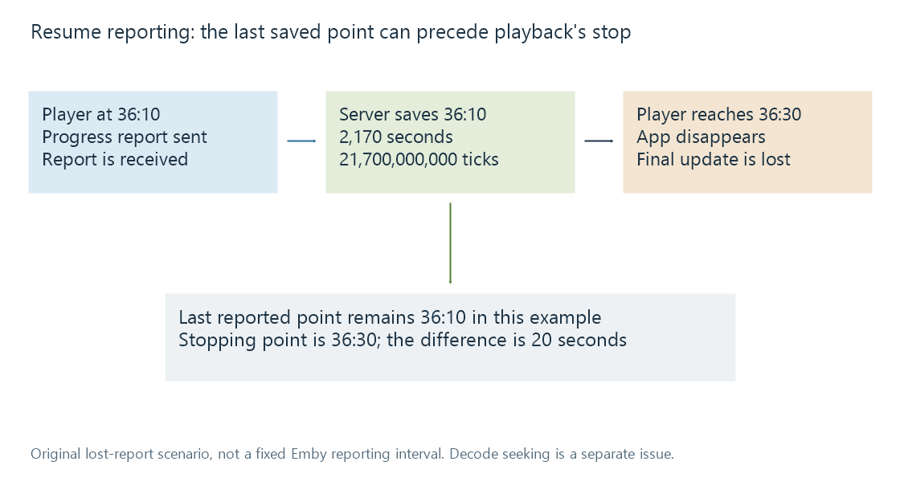

Resume positions and playback timelines
A resume position is a saved media-time location that needs the correct user, item and source timeline to continue playback meaningfully.
A resume position identifies a location on a media timeline. It is useful only with the context needed to interpret it: the viewer, the catalogue item and the represented source or edition.
A value of 36:30 means “36 minutes 30 seconds into this timeline.” It does not mean the viewer spent that long watching, and it is not a wall-clock time.
A stored value and its unit
Emby's user-item model exposes PlaybackPositionTicks. Its playback-progress model reports PositionTicks with item and media-source information. The tick convention uses 100-nanosecond units, or ten million ticks per second.
For a fictional position of 36:30:
36 × 60 + 30 = 2,190 seconds
2,190 × 10,000,000 = 21,900,000,000 ticks
The reverse calculation divides by 10,000,000, then formats 2,190 seconds as 36:30. A tick count does not become milliseconds merely because it is an integer.
| Value | Meaning |
|---|---|
| 21,900,000,000 ticks | 2,190 seconds under this convention |
| 2,190,000 milliseconds | The same interval in another unit |
| 36:30 | A human-readable location |
| A calendar timestamp | An instant when an event happened, not this location |
The unit's fine resolution does not prove that playback or saved state is accurate to 100 nanoseconds. The player, reporting frequency and media timestamps impose their own practical precision.
The server saves reported state
A player knows its current location during playback. A server can save only the information it receives and accepts.
Imagine this original reporting sequence:
- A progress update at media position 36:10 reaches the server.
- Playback continues to 36:30.
- The app disappears before its final update is received.
The last known saved point can remain 20 seconds behind the viewer's stopping point. That result does not require a codec error: the state report was simply older than the final player state.

The times and lost report are fictional. They do not specify an Emby reporting interval, retry policy or failure rate.
A normal stop report can provide a more recent position. Repeated or delayed reports require session-aware handling so that old state does not accidentally replace newer state. The public API describes report fields; it does not fully specify the server's conflict-resolution algorithm.
Seeking is a second source of difference
Even with the correct saved value, a decoder may need to begin reading before the requested picture. Compressed video often uses earlier reference pictures, so random access can start at an appropriate keyframe or access point.
A player can decode forward and discard earlier output to reach the target, or choose a nearby practical position depending on the playback path. Reading from an earlier access point and having an older saved resume point are different mechanisms, even if both appear as “it resumed too early.”
Container timestamp origins and time bases add another conversion boundary. A stored media location must be interpreted against the relevant source timeline rather than copied as a raw packet timestamp.
Elapsed viewing time is another quantity
Pause for ten minutes and the wall clock advances while the media position stays still. Play at double speed and 20 minutes of media can advance in about ten minutes of uninterrupted wall-clock playback. Seek forward and the media position jumps without viewing the skipped passage.
A resume value therefore describes where to continue, not how much content was consumed. Watched status and viewing-duration analytics need their own definitions.
A source change can invalidate correspondence
Two encodes of an unchanged sequence can have corresponding locations, but a different cut may not. In the edition example, a 13-minute insert moves the scene at theatrical minute 70 to extended minute 83. The number 70 remains valid in the new file while referring to the wrong scene.
Changing a multipart representation can also require converting between a whole-feature time and a part-local time. Removing opening material changes subsequent offsets. No work-level provider ID supplies those mappings.
See Also
- Watched status
- User-specific playback history
- Movie editions and cuts
- Multipart movies and file stacking
- Time Bases
- Video Keyframes and Random Access